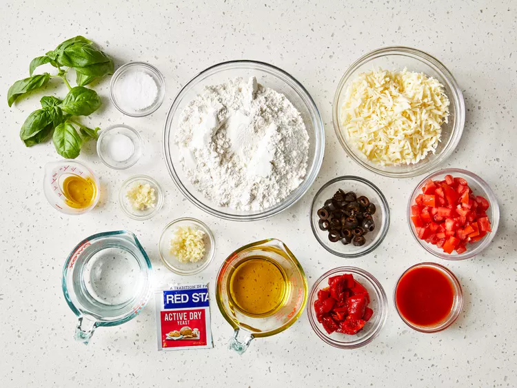
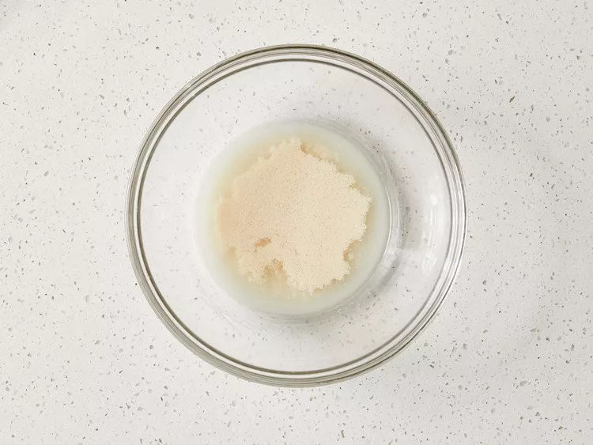
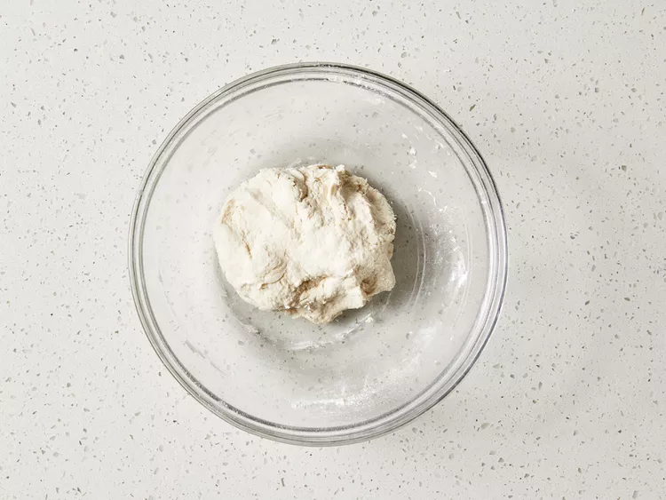
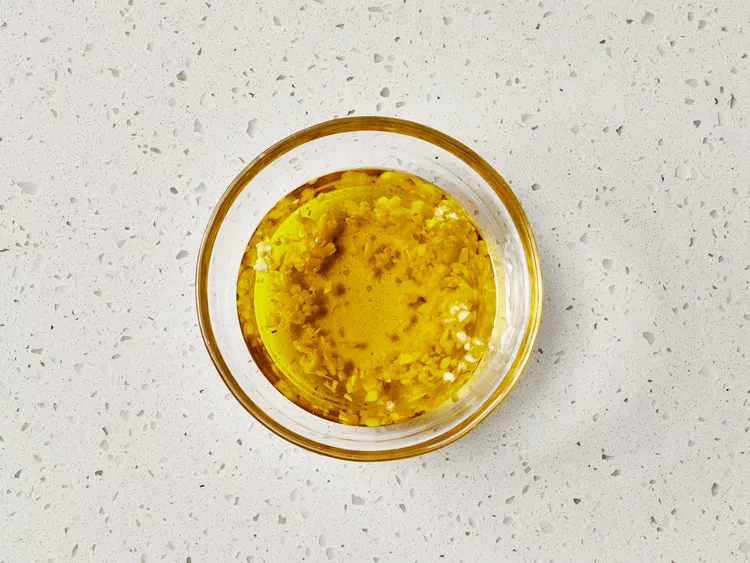
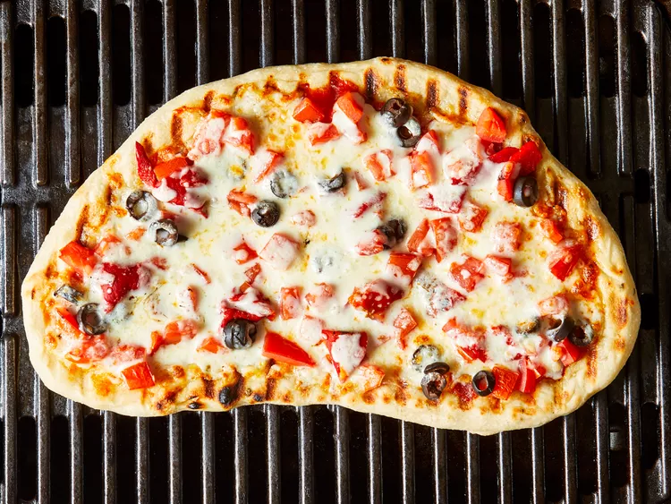

The normal recipe for Grilled Pizza

Ingredients
Pizza Dough:
- 1 cup warm water (110 degrees F/45 degrees C)
- 1 (.25 ounce) package active dry yeast
- 1 pinch white sugar
- 3 ⅓ cups all-purpose flour
- 1 tablespoon olive oil
- 2 teaspoons kosher salt
- 2 cloves garlic, minced
- 1 tablespoon chopped fresh basil
Garlic Oil:
- ½ cup olive oil
- 1 teaspoon minced garlic
Pizza Toppings:
- ¼ cup tomato sauce, divided
- 1 cup chopped tomatoes, divided
- ¼ cup sliced black olives, divided
- ¼ cup roasted red peppers, drained and chopped, divided
- 2 cups shredded mozzarella cheese, divided
- 4 tablespoons chopped fresh basil, divided
Directions
- Gather all ingredients

- Make dough: Pour warm water into a large bowl; dissolve yeast and sugar in warm water. Let stand until yeast softens and begins to form a creamy foam, about 5 to 10 minutes.

- Mix in flour, 1 tablespoon olive oil, and salt until dough pulls away from the sides of the bowl.

- Turn onto a lightly floured surface. Knead until smooth, about 8 minutes.

- Place dough in a well-oiled bowl and cover with a damp cloth.

- Set aside to rise until doubled, about 1 hour. Punch down; knead in garlic and basil. Set aside to rise for 1 more hour, or until doubled again.

- Meanwhile, make garlic oil: Combine 1/2 cup olive oil with minced garlic in a microwave-safe cup or bowl. Heat for 30 seconds in the microwave.

- Preheat an outdoor grill for high heat; brush the grate with garlic oil.
- Make pizzas: Punch down dough and divide in half. Form each half into an oblong shape 3/8 to 1/2 inch thick.

- Carefully place one piece of dough on the hot grill. Dough will begin to puff almost immediately. When the bottom crust has lightly browned, turn dough over using two spatulas.

- Working quickly, brush garlic oil over crust.

- Top with 1/2 of each of the following: tomato sauce, chopped tomatoes, olives, red peppers, cheese, and basil.

- Close the lid and cook until cheese melts. Remove from grill and set aside to cool for a few minutes. Repeat with second piece of dough.

We wish you a delicious meal!